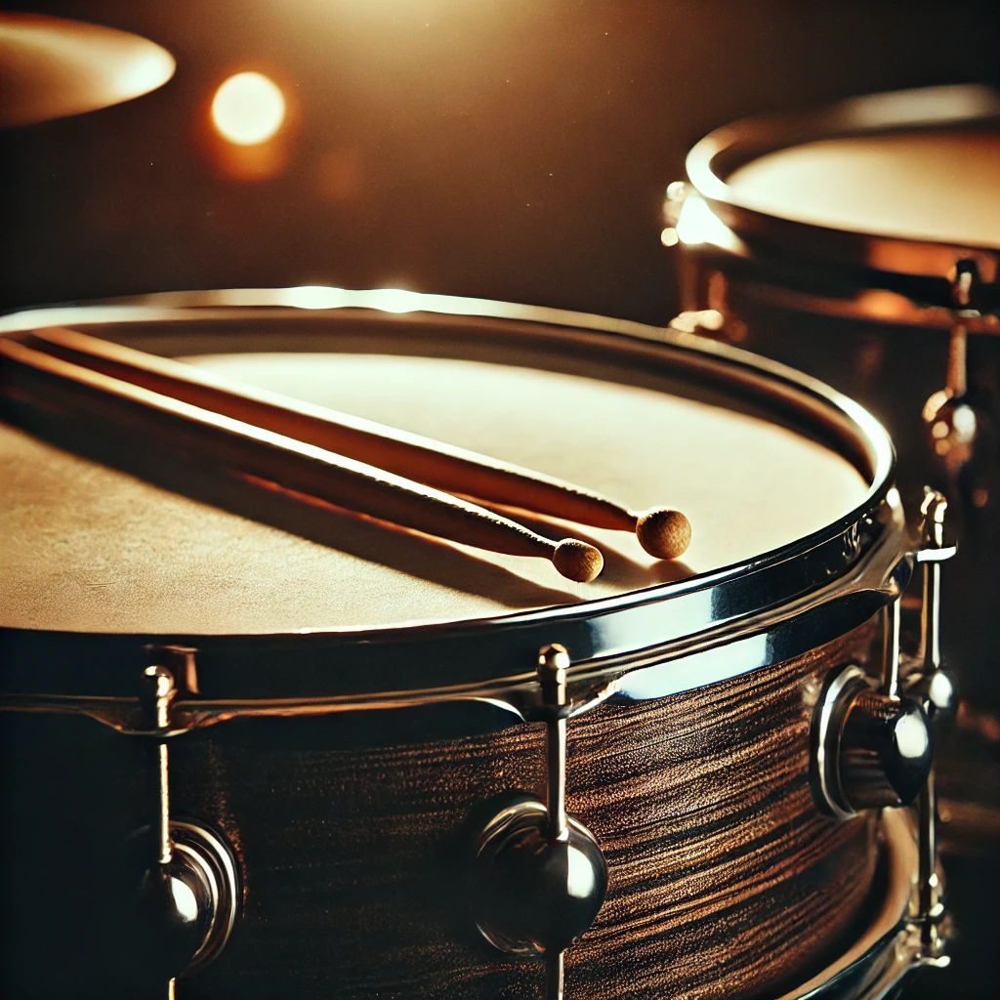

Was kannst du erwarten?
Auf dieser Webseite findest du viele nützliche Infos und Tipps zum
Schlagzeugspielen, egal ob du Anfänger bist oder schon viel Erfahrung
hast. Hier teile ich mit dir:
Ausrüstungsberatung: Ich gebe dir Tipps, welche Schlagzeuge und
welches Zubehör gut sind, damit du das Richtige für dich findest.
Lernmaterialien: Du findest hier Videos und Artikel, die dir
helfen, besser Schlagzeug zu spielen.
Erfahrungen und Geschichten: Ich erzähle dir von meinen eigenen
Erfahrungen als Schlagzeuger und was ich dabei alles gelernt habe.
Wer sind wir?
Hallo, ich heisse Ege, herzlich willkommen auf unserer Webseite über
das Schlagzeugspielen. Seit 12 Jahren bin ich Schlagzeuger, und die
Praxisarbeit beim Modul 293 in der Schule hat mich dazu inspiriert,
diese Plattform zu erschaffen, um Wissen, Techniken und Inspiration zu
teilen. Meine Reise begann im Alter von 7 Jahren, als ich meinen
Kollegen sah beim Schlagzeugspielen. Seitdem konnte ich meine Liebe
für Rhythmen, Beats und Percussion nie loslassen. In diesen Jahren
habe ich in 2 verschiedenen Bands gespielt und an verschiedenen
Konzerten mitgemacht. Pop, Jazz und Rock gehören zu meinen
Lieblingsgenres.
Hallo, ich heiße Beren. Die Idee, eine Plattform über das Schlagzeug
zu gestalten, kam von Ege, und ich fand die Idee sofort spannend. Zu
mir persönlich: In meiner Freizeit gehe ich gern ins Fitnessstudio und
genieße es, mit meinem Motorrad unterwegs zu sein.